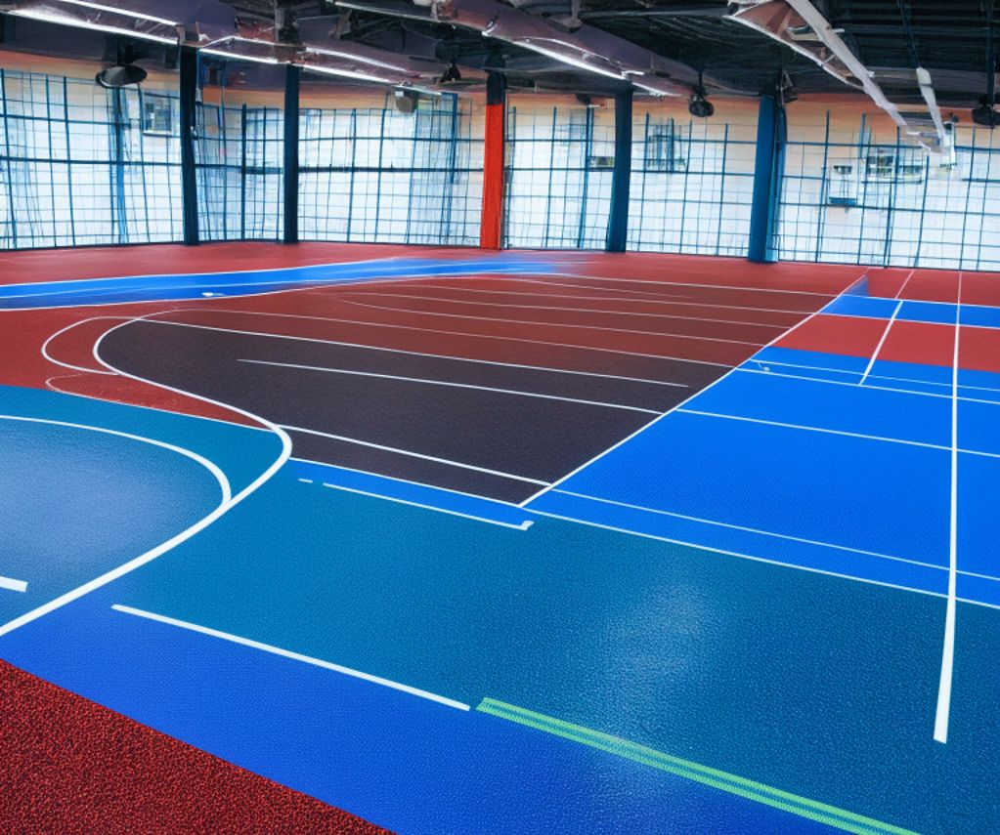
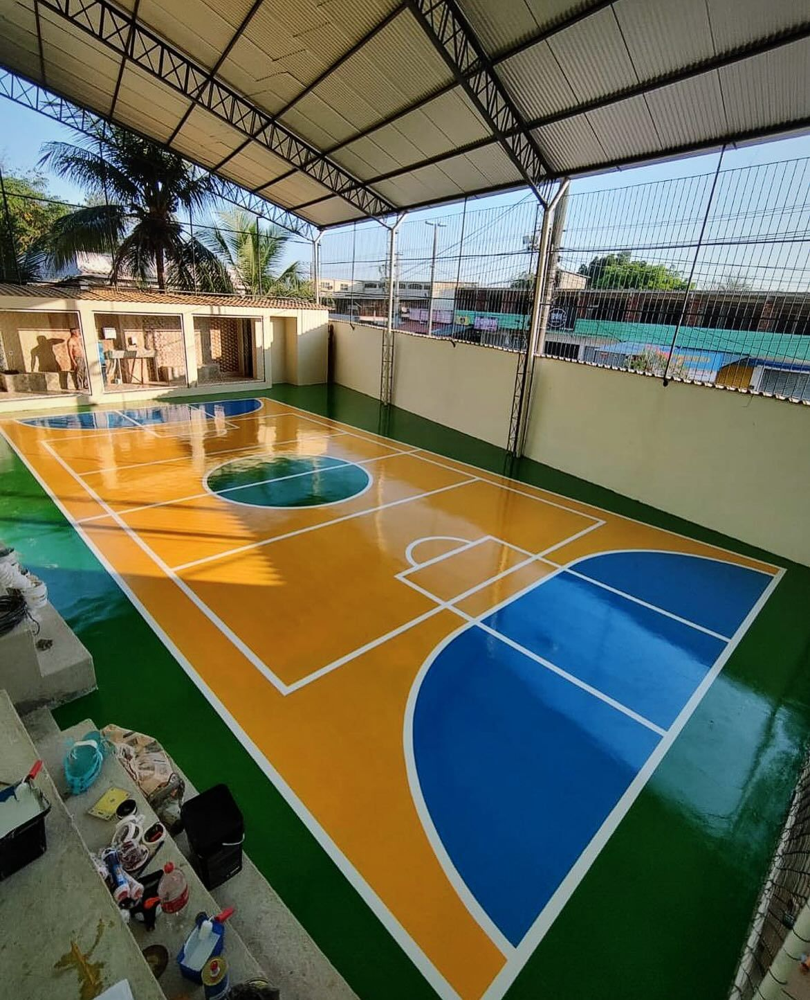
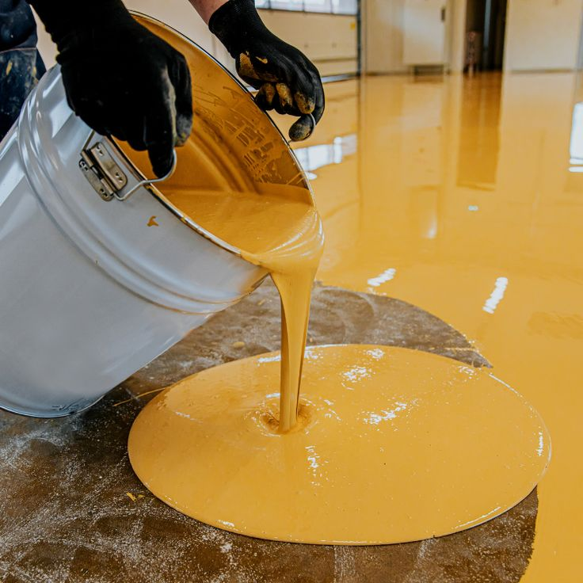

| نبذة عامة | تقوم الشركة بتصنيع وتوريد جميع الخامات والأنظمة المتخصصة في إنشاء وتجهيز الملاعب والساحات الرياضية بمختلف أنواعها، طبقًا للمواصفات الفنية والمعايير الدولية. |
|---|---|
| أنواع الملاعب | ملاعب التنس – ملاعب كرة اليد – ملاعب كرة السلة – ملاعب خماسي – مضامير الجري (التراكات) – الساحات الرياضية متعددة الأغراض. |
| أنظمة الأرضيات | أنظمة الترتان – أنظمة الأكريليك (هارد / سوفت) – أنظمة النجيل الصناعي – أنظمة الأرضيات المرنة والصلبة. |
| مواد اللصق | مواد لصق النجيل الصناعي – لواصق بولي يوريثان – لواصق إيبوكسي – مواد تثبيت عالية القوة مخصصة للاستخدامات الرياضية. |
| الخامات المصنعة | طبقات أساس – طبقات امتصاص الصدمات – طبقات تسوية – طبقات تشطيب نهائي – دهانات وطلاءات أرضيات رياضية. |
| خصائص الأنظمة | مقاومة للعوامل الجوية – مقاومة للاحتكاك – امتصاص الصدمات – ثبات الألوان – عمر افتراضي طويل – سهولة الصيانة. |
| مجالات الاستخدام | الأندية الرياضية – المدارس والجامعات – مراكز الشباب – الصالات المغطاة – المشاريع الحكومية والخاصة. |
| الخدمات المقدمة | تصميم الأنظمة – توريد الخامات – الدعم الفني – الإشراف على التنفيذ – توفير المواصفات الفنية والكتالوجات. |
| الملفات الفنية | تحميل الكتالوج الفني (PDF) |
| صور المشاريع |
  
|


.jpeg)